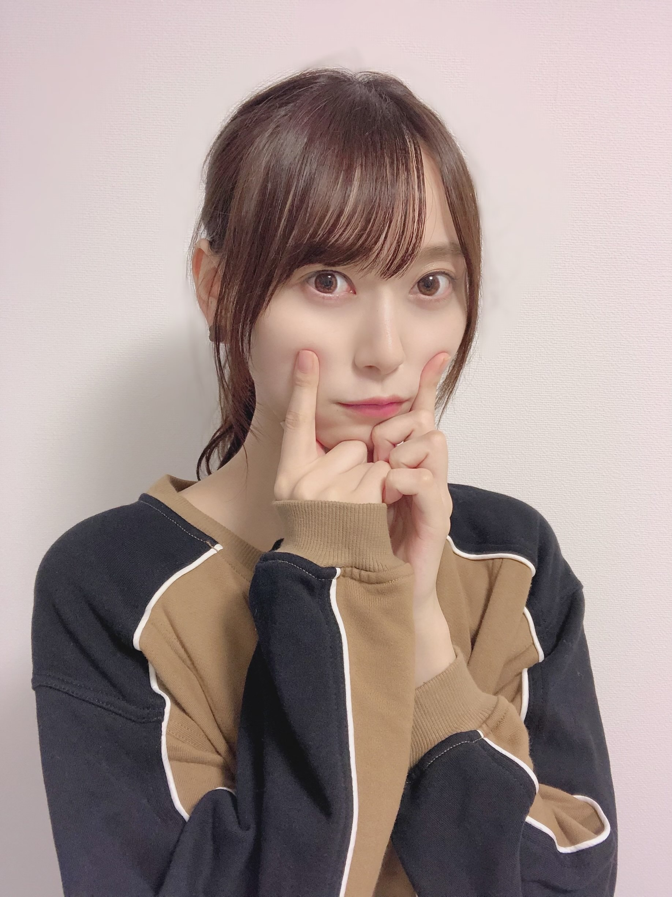
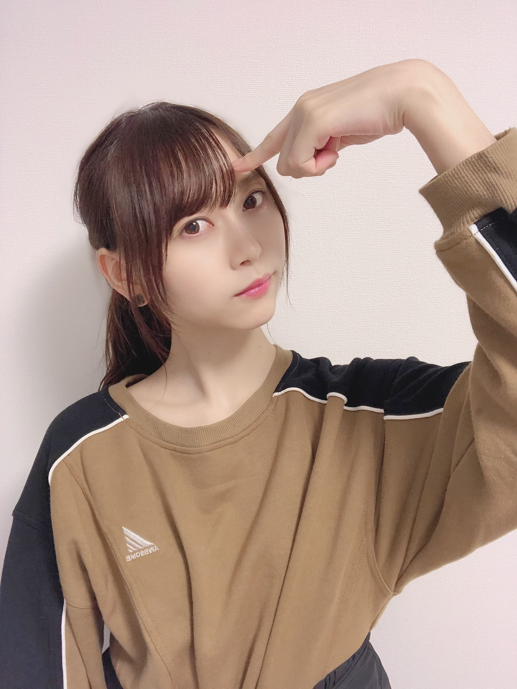
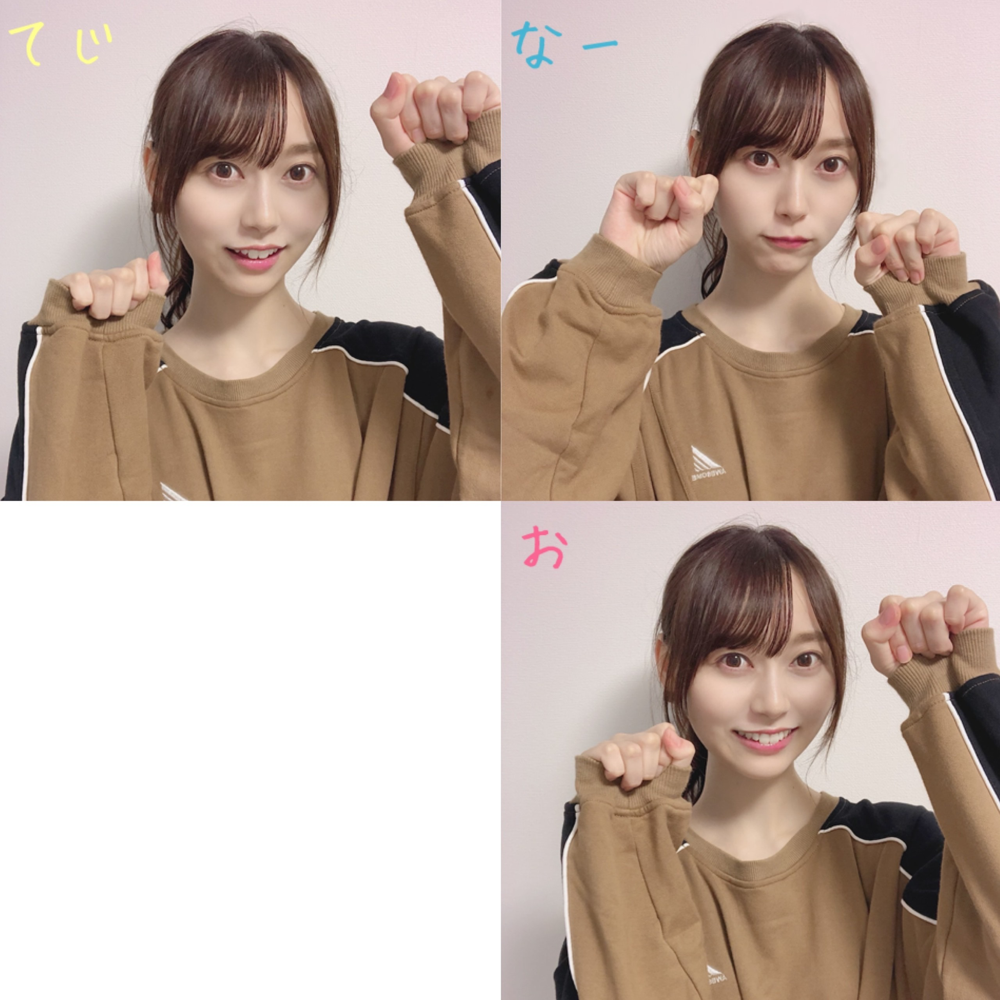

2020/0928Monポーズ迷走中☺︎弓木奈於
こんにちは！
ページをクリックしてくださり、ありがとうございます✨
乃木坂46 新4期生
京都府出身
弓木奈於（ゆみきなお）です( ˶˙ᵕ˙˶ )

コメントで可愛い顔文字を教えていただきました( ˶˙ᵕ˙˶ )
写真のポーズ、何ポーズ...？って思いますよね（笑）
携帯を置いて7秒のタイマースタイルで撮りました☺︎
【1枚目】ピースで撮る
〝もう一回ピース以外で撮ろう〟
【2枚目】
（カウントダウン）7・6・5・・ピース！
〝あ、またピースしてしまった！！
ピンチ、時間が迫ってくる...！〟
3・2・1...！
の結果があの写真です（笑）
でも瑠奈ちゃんが褒めてくれました( ´・ᵕ・ ) ﾔｻｼｲ

うーん...？
皆さん、ポーズを教えてください\(ᯅ̈ )/
---------- ｷﾘｶｴ ---------
❁お返事のコーナー❁
⚫︎肉まんの味でなにがすき？？？
豚まんですԅ(¯﹃¯ԅ)
以前友達とプールに遊びに行く時に、友達が鞄から肉まんを取り出して
「肉まんもらったから半分こしよ！」
と半分分けてくれたんです！！
友達の優しさと相まって、その肉まんは世界で一番美味しく感じました☺︎✨
⚫︎奈於ちゃんはどんな時に秋だなーと感じますか？？
半袖で寒くなったら秋を感じます( ˃ ˂ )
⚫︎弓木さんは北海道に来たことありますか？
小さい頃に家族で行ったことがあります！
とても楽しかった事はおぼろげながら覚えています✨
また絶対に行きたいです⸜(* ॑꒳ ॑* )⸝ ❀
⚫︎なおちゃんは辛いもの得意ですか〜？？？
以前友達が辛いお鍋屋さんに誘ってくれて、行った時の話です...。
私と友達2人で3人だったのですが、2人はその辛いお鍋屋さんによく行っていて、普段は最大級の少し下のレベルを食べているほど辛みに強い2人でした。
でも2人は私に気を遣ってくれて真ん中のレベルにしてくれたのです！
その時の私は、辛みに対して得意、不得意なんて考えた事もなかったので
「真ん中ってことは普通ってことなんだな〜♪」
と口笛を吹きそうな状態でした。
そしてお鍋が到着して、食べ始めると...
〝え、え、なんか辛い...？〟
チラッと友達を見ると、2人は普通に食べています。
〝気のせいか...！〟
と辛みからの逃避を行いますが、お箸のスピードが明らかに減速。
それを見た友達が気を遣ってくれて、
「気遣わんと、いっぱい食べてや〜！はい！」
とよそってくれました。
私に気を遣って普通レベルにしてくれたり、辛みに強い人に憧れていた事もあって、自分自身も辛みに弱いと認めたくなかったり、
辛みによって溢れる涙を必死に堪えて完食させていただきました✨
その日から〝辛みにあまり強くない人〟として生きていく事を決めました。
以上
弓木奈於、辛みとの出会い。でした。
長い（笑）
⚫︎僕の今日の夜ご飯を決めてください(ㅅ´ ˘ `)
ロールキャベツ！かオムライス！(*´˘`*)
...私が食べたいだけ（小声）
⚫︎そろそろ登下校の時に金木犀がふわっと香る時期になってワクワクしてます。朝から落ち着く匂い嗅ぐと元気出ませんか？？？
すごく素敵で、読んでいて想像して幸せな気持ちになりました☺︎
ありがとうございます(*´˘`*)✨
⚫︎筋トレを毎日やってる人をどう思う？
素敵です(*ˊᵕˋ*)！
毎日続ける事って決して簡単な事じゃないし、筋トレはすごくしんどい！！
だから本当に素晴らしくて、私も頑張ろうって思います✨
⚫︎弓木ちゃんって猫舌ですか？？
...はい、とてつもなく( ˊᵕˋ ;)
⚫︎ステーキはしっかり焼く派ですか？それとも少しレア派ですか？
しっかり焼く派です(* ॑ ॑* )⸝♡
⚫︎弓木ちゃんはうなぎ好き？ϵ( 'Θ' )϶ｳﾅｳﾅ
好きですϵ( 'Θ' )϶ｳﾅｳﾅ
⚫︎自分に似合うメイクと自分が好きなメイクが違う時はどっちのメイクをすればいいと思いますか？？( •́ •̀# )
私もすごく同じ気持ちになります( ˃ ˂ )！
私も今研究中なのですが、
〝あ、良いかもしれない♪〟
が見つけられるように
自分に似合うメイク、好きなメイクを「こうした方が理想に近づけるかも...！」「これはどうやってもダメだから違う方法でやってみよう！」
っていっぱい試してみて研究しています( ›_‹ )
是非一緒に頑張りたいです...✨
⚫︎てじなーお！は、さ行、た行、か行ちゃんと言えますか？
言えますよ〜( ｰ̀֊ｰ́ )✧
早口言葉なんかも言えちゃいますよ〜✧
⚫︎目の前に 『ゆみっきー』『勉強』『ゆみっきー』という選択肢があります 。なにを優先するべきですか？
勉強！
と言いたいところなのですが、コメントをくださって、いつも本当に本当に頑張っていらっしゃって『お身体に気をつけてくださいね心から応援しています』と思っています...( ˃ ˂ )！
少しでもお力になれるように、笑顔をお届けできるように、頑張ります！✨
⚫︎ ゆみっきーはショートの時ありました？
...ありました（小声）
お鍋の具材何が好きか沢山教えてくださってありがとうございます☺️
読みながら、すごくお腹が減りました☺︎笑
---------- ｷﾘｶｴ ---------
明日は黒見ちゃんです！
黒見ちゃん、バナナミルク美味しいんだって！（伝言ゲームじゃないよ☺︎笑）
最後まで読んでくださり、ありがとうございました✨

〝てじなーお〟の振りをリクエストしていただいたので、撮ってみました( ∩¨∩ )⚑︎⚐︎
皆さんにとって素敵な一週間になりますように...✨
本日もありがとうございました☺️
2020/09/28 20:48

PROFILE
新4期生リレー
202104
| SUN | MON | TUE | WED | THU | FRI | SAT |
|---|---|---|---|---|---|---|
| 1 | 2 | 3 | ||||
| 4 | 5 | 6 | 7 | 8 | 9 | 10 |
| 11 | 12 | 13 | 14 | 15 | 16 | 17 |
| 18 | 19 | 20 | 21 | 22 | 23 | 24 |
| 25 | 26 | 27 | 28 | 29 | 30 | |

コメント(236)
31回目のブログ更新ありがとう！
昨日やっとでカラオケ行けたわ笑
ストレス発散出来ました♫
「夜に駆ける」めちゃくちゃ難しい。
何回歌うのってくらい歌った笑
実は目標があって、人生でカラオケ100点を獲ることなんよね。
自己ベストは99.375なんやけど、一年以上更新出来てない…。というより、99点が一年以上出てないかも…。練習します笑
めちゃくちゃどーでもいいこと言うね笑
最近、カリカリ梅にハマってる( ˙-˙ )
ではでは。また書きます。
ゆみっきーLOVE♡♡
りゅうや
なおちゃんの写真見るとほっこりする
てじなーお 可愛すぎ( * ॑꒳ ॑* )
陸上大会近いから応援して〜笑してくれたら1位取っちゃうもんね！(応援無くても頑張るけどしてくれたらもっと頑張る❤)
中１男子 りょ〜た
今日も可愛い！
てじなーお可愛いすぎます！
僕もすごく猫舌なんですが
どうやったら猫舌じゃなくなるんでしょうね笑
オムライス食べたくなってきました！！
オムライスの卵はふわトロ派ですか？
僕はふわトロ派です！
後僕の家ではオムライスにコーンを沢山入れて食べます！
次回のブログ更新も楽しみにしてまーす！
質問答えてくれてありがとうϵ( 'Θ' )϶ｳﾅｳﾅ
今日ね僕の誕生日なんだけどモバメでメンバーのみんなが祝ってくれてめちゃくちゃ嬉しかった！弓木ちゃんもブログで祝ってくれてたよね！嬉しかったよ！
てじなーお可愛すぎる！握手会で生で見たいなぁ〜
またまた質問！
弓木ちゃんは大阪に来たことがありますか？あったならその時のエピソードを教えて欲しいなぁ
それじゃまた次のブログ更新楽しみにしてます！
いやもうね、どんなポーズしてても可愛いですよ笑
ほんと説明ないとなんのポーズか全く分からないけど笑
僕もこの前写真撮る時があっていろいろポーズしててんけど、JKがやりそうなポーズしてたら女の子たちに違うとご指導頂きました笑
ちなみに下向いてピースするやつです。
もしかして、それももう古い？
てじなーおの振りかわいい！
奈於ちゃんにとっても素敵な1週間になりますように
またブログ更新楽しみにしてます！
(=ﾟωﾟ)ﾉﾎﾅ､ﾏﾀ!!
本当にお顔が可愛すぎて乃木坂の中で1番好きです！！！( ⸝⸝•ᴗ•⸝⸝ )
奈於ちゃんに出会えてよかったな〜って心の底から思いました！(急に重い（笑）)
最近は夜に出ると半袖でも少し肌寒く感じるようになったからもう秋がすぐ目の前まで来てるんだなって実感したよ（笑）
なおちゃんはもう長袖デビューしましたか？？？？
これから寒い季節が来ると思うけど体調管理には気を付けて毎日のお仕事頑張ってください！！(๑•ᴗ•๑)♡
最後に質問です〜
奈於ちゃんがいつも着るお洋服のブランドはどこですか？？？？
参考にしたいのでよかったら教えてください♡
奈於ちゃんこれからもずっとだいすき！！！！はやく会いたいな( ᐢ. ̫ .ᐢ )
♡あみ♡
久しぶりのコメントになっちゃったー笑！
相変わらず可愛いくて限界突破弓木だーー、、
そして何よりブログの書き方が改めて好きです〜♡
ワクワクする読んでると！！！笑
弓木ちゃんにとって今週も良い一週間となりますように！！
弓木ちゃんの選ぶ言葉とか考え方素敵で大好き！！
またコメントしに来ます！！ブログありがとうーー❤︎
なお！
やっほー！
ひろき(Yandji)です☺️
ブログ更新ありがとー！！！
質問タイムー！！！
さくらとのエピソードあったら教えてー！
また、コメントするね！
では、またねー！
ひろき(Yandji)より
最近大学がオンライン授業の為
外に出る習慣があまりなかったので
健康意識がてらジョギングをしています！
奈於ちゃんはどんなポーズでも
スタイルいいから似合うよ〜！
Q秋といえば食もそうですが芸術もあります！
奈於ちゃんは芸術の中で好きな物とかありますか？
書道やってる時心安らぐんだよな〜笑
ポーズがめちゃくちゃかわいい……好き
うーんっていうのもいいねぇ
ポーズな〜
手を耳にするとか？
あ、質問なんだけどもう10月になるじゃん
ハロウィンの仮装をするとしたらどんな仮装がしたい？
握手会があったらそこでしたりするんだろうけどな〜
今年はないもんね
出来ればその仮装してる写真も見たいな（小声）
てじなーおの振りがめちゃくちゃかわいい
これは握手会とかでされたらもうデレデレですわ
それじゃまた5日後に！
じゃあね〜
ワンピース見てる？
もし見てたら好きなキャラと話教えて
あのポーズ、色々考えてみたけど、
11歳ポーズとかどうかな？
年齢聞かれたら、使うとか？
小さい子とか、手で年齢教えてくるから
やる時は、小さい子がやる感じで！
いつも、なおちゃんのブログは
こんな感じで質問してくれるから
とても楽しいなって思うよ！
次のブログも、楽しみにしてるね！
今週も頑張りましょう！
コメント読んでもらえた♪
また北海道来た時は美味しい食べ物食べてください！
待ってました（ ; ; ）今日も1日お疲れ様でした☀︎
もうすっかり秋だね〜〜肌寒い…(ᯅ̈ )
UTB12月号に載るんですか？！！
絶対買います☺️楽しみです✨
質問返したくさんありがとう〜
私も辛いものは苦手…
そんなに辛くない言われるキムチでも
からーい！！なってしまうよ〜笑
口から火吹いてしまうんじゃないかって感じです(？)
お写真ありがとう〜☺️✨
1枚目の写真すごい好きです✊ かわいい✨
お洋服も可愛い〜どこのブランドですか？
では，またコメントするね
体調に気をつけて，お互い1週間頑張りましょ！
いつもありがとう，だいすきです
さっこ
いろんなポーズしてくれてありがとう！！ずっと迷走しててください！（おい）
奈於ちゃんはウナギ好きなのかあ
なんか自分はあまり得意ではなくてですね、、、
今度挑戦してみようかしら。。
ノギスキ楽しみにしてるね！！奈於ちゃんが世界にバレてしまう……？？？
全力で暴れてくれるのを楽しみにしてます笑
今日もありがとね！！
たーくん
〜質問〜
あのー、、、大変恐縮なんですけど〜、、、
…今日のお昼ごはん決めてもらっていいですかぁ？？
辛いもののお話の時、ちょっと怖い話テイストな文面でなんか面白かったです！TIFの時可能であればてじなーおポーズを待ってます！
弓木ちゃん今日も１日お疲れ様です。
弓木ちゃん今日も可愛いです。
今日はお仕事お休みでした。
今日はこないだ届いた生写真を入れました。
こないだ弓木ちゃんの生写真を買いました。
どれも衣装が凄く綺麗で悩みました。
弓木ちゃんの写真が少しだけ増えました。
これからも集めていきます。
これからもお仕事頑張って下さい。
自分もお仕事頑張ります。
これからのブログを楽しみにしてます。
修学旅行の代わりに。
すごく楽しみー
ってか、ゆみっき～達４期ちゃんは、来月早々に「TIF」総出演が決まって、今はリハの真っ只中だとは思うけど、毎日「いい汗」をかいて沢山動いてるんだねぇ～( *´艸｀)良き良き☆彡
そして、最近は「らじらー」で新しい「あだ名」を作ってもらえたから、そっちも活躍させないとね( *´艸｀)・・・・ってか、ポージングを「てじな～お」につけてしまうと、ひと昔前に流行った「マジック兄弟」にそっくりなようなそうでもないような？(笑)( *´艸｀)・・・・あまりつっこまないようにしておこう(笑)
（僕は「手話指導者」を経験していたという事もあり、ポージングに関しては、手話に似ているものを見ちゃうと「今！手話使ったなぁ～？」って感じてしまうし、アメリカ手話も勉強してたから、すぐ分かっちゃう(/ω＼)これも、一種の「職業病」ですわ～(笑)( *´艸｀)）
ってか、最近はあっという間に９月も終わりに差し掛かり、僕の大好きな「金木犀」の香りが、家に居ながら漂ってくる季節になっちゃったし、半袖から薄めの長袖に衣替えする季節になって、あっという間に「さむ～い(>_<)」って言いながらの冬が来ますなぁ～。
（僕は、冬は特に苦手で下半身不随という個性もあり、足がめっちゃ「氷の塊をつけている感じ」っていう位冷たくなるから、冬は来ないでほしいと切実に願っている(笑)雪が降ると、本当に足元が危険地帯になって、外にも出れないし・・・ってそんな事言ってるとゆみっき～に怒られるか(笑)「私、冬生まれなんですけどぉ～(。-`ω-)」って）
それと最近は、４期ちゃんの中では「バナナミルク」を流行らせようとしているなぁ～？(笑)( *´艸｀)
たしかに、「タピオカのブームがあるのと同時に、バナナジュースがブームになるかも？」っていうのは密かに知っているけど、昨日のミュウ(>o<)ちゃんから始まり、今日のゆみっき～も言ってるから、「こりゃ～、４期ちゃんの間で一回りするなぁ～(笑)」って思っているお兄ちゃんでござる( *´艸｀)
それじゃあ、次のブログもめっちゃ楽しみにしてるねぇ～ヽ(^o^)丿次に会えるのは１０月入ってからだねぇ～。早いねぇ～(●´ω｀●)
明日も一日！一緒にお家時間を楽しもうね♪大好きだよ♪ゆみっき～☆彡
（てじな～おちゃんも、TIF前に体調を崩して、寝込まないように気を付けながら毎日元気に過ごしてね☆彡今が大事な時期の１つだよぉ～ヽ(^o^)丿）
弓木ちゃんのブログ毎回写真が可愛くてとっても癒されるー！
今回のブログでこの間した質問の答えが帰ってきてたからすごい嬉しかったー！ありがとう！
最新急に寒くなってきらから体調に気をつけながらお仕事頑張ってね！今は会えなくてなかなか伝えられないけど毎日陰ながら応援してるよー！笑
いつもありがとう！お疲れ様、大好きです！
なんか夏終わった瞬間急に寒くなったね。。
寒すぎてお布団から出れない。笑笑
ゆみきちゃんは寒くてもお布団からすぐでれる？
私はほんとに寒くて寒くて夜寝る前に靴下履いて
寝てます、、笑笑
肉まんの季節だ！！この前肉まん買ったんだけど
めっちゃ美味しかった。秋って感じ。
豚まん美味しいよね。弓木ちゃんの肉まんエピソード
すき。ほのぼのしてて笑笑
弓木ちゃんほんとに丁寧に質問返してて
嬉しいしすごいなって思ってる！！！！
弓木ちゃん私もうそろそろテストなんだけどね、
勉強嫌いなせいで勉強しなきゃって言いつつ、勉強出来てないの、、だから応援して(><)
弓木ちゃんに応援して貰ったら頑張るから、！！笑笑
弓木ちゃんはカフェとか行きますか？？？
私パンケーキ巡りにハマってて、、テスト終わったら
行くんだァ笑笑
また5日後ね！！
忙しいなかブログの更新ありがとー❗
どんなポーズしててもかわいいよ～
なんならポーズいらなくてもかわいい
今日も1日お疲れ様❗
明日もお互い頑張ろー＼(^^)／
ゆっくり休んでね❗
おやすみ(´ω｀ )zzZ
だいすけより
ポニーテール女子大好きです、ありがとう！
質問です！
なおちゃんはこれから挑戦してみたいお仕事はありますか？
なおちゃんがいるから頑張れてます！
いつも癒しをありがとう^ ^
こんばんは！
ブログ更新ありがとう(T . T)
てじな〜にゃ。可愛すぎて、、目の保養ですありがとうございます(^^)♡
よく、写真を撮るときにノリでポーズする人いるけど本当にすごいなぁって思います。私は写真撮るときポーズ決めてから撮るタイプなのですが、なおちゃんはノリでいけちゃうタイプですか？？ ノリが出来なかったら、海苔を持って写真を‥撮って欲しいなぁってなーにいってんだろう。ごめんなさい笑
今度はなにか食べ物と撮って欲しいなぁー！
あとは好きな芸人さんのポーズ！誰でしょー的な！
楽しみにしてます☺︎ お仕事も徐々に始まって大変だと思いますが、体調に気をつけてがんばってください！！！
私も頑張ります☺︎
あっ、最近ハマっていることはありますか？？私は漫画を集めるのにハマってます（サスペンス？推理系が好きで思い切ってコナンを全巻買いました）よかったら教えてくださいo(･x･)/
どこで買ったんですか〜？？
ポーズかぁ
ポーズ、ポーズ、ポーズ……
考えるポーズで行きましょう！！笑
いつも楽しく観てますよ
ポーズですか…
あえての｢俺はカッコイイぜ｣的なポーズで笑
お待ちしてます。
久しぶりにブログに来れました(*•̀ᴗ•́*)و ̑̑
てじなーおってなんだ？となりました笑笑
神推しなのに情けないですね❗
もっと勉強します。(ー@-@ー)
なおちゃんが久々見れて良かった元気貰えました！
仕事頑張ります٩( ▽ )۶
また書きます(*•̀ᴗ•́*)و ̑̑
文豪でした。
ブログに初めてコメントさせていただきます。
弓木奈於さんは、京都出身で自分の方言は好きですか？
僕は、関西の訛りがとても好きです。乃木坂工事中でやっていバレンタイン企画とかでの関西弁の告白を聞くと関西弁めっちゃキュンってします。
最近は、ノギザカスキッツを繰り返し見たりしていて、弓木さんと林さんのコントを見ると毎回笑ってとても楽しませてもらってます。弓木さんの言葉で、「馬鹿じゃないですよ。」って言った言い方がとても好きです。
方言はひとつの武器なんだなって思いました。
ブログの写真の“てじなーお”の“お”の写真が1番好きです。
次のブログの更新楽しみにしています。
実は、ショートの弓木さんを見てみたいと思いました。(小声)
謎のポーズのいきさつ。
今回の写真は全部甘目だね。
僕は辛い物が苦手で、カレーもいつも甘
口です。
てじなーお。
写真のポーズ、ガオーポーズのゆみっきーが見てみたいです...
最近色んなお店で、お芋味の食べ物を見かけて
甘い物を食べたい欲が止まりません!
ゆみっきーはお芋好きですか?
今日は数ヶ月振りに有給休暇を取って
お家でゆっくりしてました。
目覚ましの音を気にせず好きな時間に
起きられるって、とても幸せですよね～
今週も一週間頑張りましょうね～!
それでは次の更新も楽しみにしてます
てじなーおかわいいです笑
自粛期間から筋トレしてるから褒められた気分になってます、これからも頑張れる～笑
ショートの弓木ちゃんも見てみたいなぁ(ﾎﾞｿｯ)
可愛い写真にほっこり♪
ポーズ可愛いよ
てじなーおcute(*^^*)
明日もHAPPYを
お休みなさい(^-^ゞ
相変わらず自撮り可愛いですね
気のせいかもしれないですけどメイクちょっと変えてますか？
眉がいつもと違うなあと感じました
てじなーおの振付すごい可愛らしいですね〜
これから仕事が繁忙期に入って忙しくなってしまうので、なかなか奈於ちゃんの活躍が追いづらくなってしまうけど、こうやってブログを読むだけですごく元気になります
悲しいニュースがまた流れてしまって心が滅入ってしまうけど、お互い負けないように頑張ろうね
笑って会えますように。
またブログ更新お待ちしてます
最初のポーズはしゅーぺいさんのポーズと少し似てた。ｗ
今回の服も秋ぽくってかわいい！！
本当にまた一週間頑張れる！！いつもたくさんの笑顔、ありがとう！
てじなーおの振り付けも握手会で実際に見てみたいな～
今回も質問返してくれてありがとうね！ショート姿のゆみっきーも見たいな(小声)
これからも応援し続けるね！
ｰ質問ｰ
10月になるとハロウィンの時期になるけど、何か仮装とかしますか？あと、してみたい仮装とかある？
答えてくれると嬉しいな
ポーズにお悩み…とのことですが、バスケの審判のジェスチャー紹介、なんてどうでしょう？
ちょっとしたルール説明なんかも、やってない人は新鮮かもしれません。
バスケ絡みのお仕事があった時に使えるかもしれませんし、何よりバリエーションに困りません笑
写真を撮られる機会は少ないから、私の場合は別に良いんですが、確かに難しい問題な気がします。
無理にポーズしなくても、笑顔だけでも充分良い写真だと思いますよ。
(^^)
好きです！！！！！！お写真が今日もとってもとっても可愛くて召されてしまいました…( º﹃º )
｢てじなーお｣が、さすが必殺技と言いますか、まんまとやられてしまいました。お強いです…！
自分も辛いものは苦手なので、奈於ちゃんがすごいなあと思います！自分だったら｢辛い！｣とビエビエ言ってしまいそうです…お友達の親切な心遣いに応える奈於ちゃんが素敵です…！
そして、辛さにも色々あるので、この辛いのは大丈夫！などがあれば辛みにも親しみが湧いてきそうですよね。(？)自分はどれも難しかったです( ･8･ )
合うメイクをとるか好きなメイクをとるか、というのはなかなか難しい問題ですよね！自分は結構好きなようにメイクをしてしまうのですが、自分にどういうものが似合うのかもよくわからずに迷走しております。自分も奈於ちゃんと一緒に頑張りたいなあと思います…！
最後に少しばかり質問させてください！
・耳のアクセサリーに悩んでいるのですが、奈於ちゃんは普段イヤリングやピアスはつけますか？つけるなら、どんなものをつけていますか？
・良く使う、好きなアイシャドウやリップの色はどの系統ですか？
涼しくなってきて、少し過ごしやすい季節になってきましたね…！
ですが、くれぐれもお疲れの出ませんようになさってください。また次の更新を楽しみにしています！どうでもいいですが、今とんでもなくおうどんが食べたいです！
迷った結果そのポーズは良いと思うよ。ちょっと追い込まれた時にどんなポーズをするのか試してみるのもありかもね。
ー質問ー
・5教科7科目（理科:地学、生物 社会:世界史、公民）で出来たら良いなって思う教科はなに？
・第二言語学ぶなら何語を学んでみたい？
・座右の銘はなにかあるかな？
ありがとう！次回も楽しみにしているよ。
コメントする